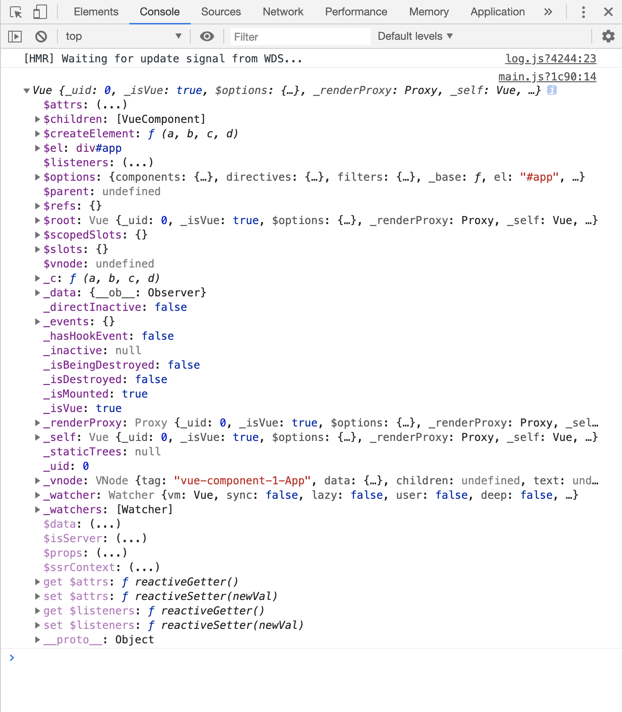

new Vue()的时候发生了什么
从源码分析，new Vue()实际上就是调用了原型上的_init()方法，那么_init()方法做了什么？
执行如下代码，打印vue实例
let vue = new Vue({
el: '#app',
// router,
components: { App },
template: '<App/>',
});
console.log(vue)
结果如下：

export function initMixin (Vue: Class<Component>) {
// Vue的原型链上添加 _init 方法
Vue.prototype._init = function (options?: Object) {
// 定义vm等于当前实例
const vm: Component = this
// a uid
vm._uid = uid++ // 当前实例的uid加1
let startTag, endTag
/* istanbul ignore if */
// 非生产环境 & 记录性能 & mark存在
if (process.env.NODE_ENV !== 'production' && config.performance && mark) {
startTag = `vue-perf-start:${vm._uid}`
endTag = `vue-perf-end:${vm._uid}`
// 相当于 window.performance.mark(startTag)
mark(startTag)
}
// a flag to avoid this being observed
// 如果是Vue的实例，则不需要被observe
vm._isVue = true
// 合并配置项
if (options && options._isComponent) {// 如果 options 存在并且有子组件时，options._isComponent为true
// optimize internal component instantiation
// since dynamic options merging is pretty slow, and none of the
// internal component options needs special treatmen
// 内部component 的options初始化
initInternalComponent(vm, options)
} else {// 非内部Component的 options 初始化
// 将options进行合并
vm.$options = mergeOptions(
resolveConstructorOptions(vm.constructor),
options || {},
vm
)
}
/* istanbul ignore else */
// 在render中将this指向vm._renderProxy
if (process.env.NODE_ENV !== 'production') {
initProxy(vm)
} else {
vm._renderProxy = vm
}
// expose real self
vm._self = vm
initLifecycle(vm)// 初始化生命周期
initEvents(vm)// 初始化事件
initRender(vm)// 初始化渲染
callHook(vm, 'beforeCreate') // 回调 beforeCreate 钩子函数
initInjections(vm) // resolve injections before data/props，初始化injections
initState(vm)// 初始化state，响应式
initProvide(vm) // resolve provide after data/props，初始化provide
callHook(vm, 'created')// created
/* istanbul ignore if */
if (process.env.NODE_ENV !== 'production' && config.performance && mark) {
vm._name = formatComponentName(vm, false)
mark(endTag)
measure(`vue ${vm._name} init`, startTag, endTag)
}
// 挂载实例
if (vm.$options.el) {
vm.$mount(vm.$options.el)
}
}
}
可以看出，_init()函数主要做了如下几件事：
配置合并
vm._self = vm
initLifecycle(vm)// 初始化生命周期
initEvents(vm)// 初始化事件
initRender(vm)// 初始化渲染
callHook(vm, 'beforeCreate') // 回调 beforeCreate 钩子函数
initInjections(vm) // resolve injections before data/props，初始化injections
initState(vm)// 初始化state，包括props,methods,data,computed,watch的初始化
initProvide(vm) // resolve provide after data/props，初始化provide
callHook(vm, 'created')// created
挂载实例， vm.$mount(vm.$options.el)
三、initLifecycle
export function initLifecycle (vm: Component) {
// 将配置合并完成的结果赋值给options
const options = vm.$options
// locate first non-abstract parent
let parent = options.parent
if (parent && !options.abstract) {
while (parent.$options.abstract && parent.$parent) {
parent = parent.$parent
}
parent.$children.push(vm)
}
vm.$parent = parent // 指定已创建的实例之父实例，在两者之间建立父子关系。子实例可以用 this.$parent 访问父实例，子实例被推入父实例的 $children 数组中。
vm.$root = parent ? parent.$root : vm // 当前组件树的根 Vue 实例。如果当前实例没有父实例，此实例将会是其自己。
vm.$children = [] // 当前实例的直接子组件。需要注意 $children 并不保证顺序，也不是响应式的。
vm.$refs = {}// 一个对象，持有已注册过 ref 的所有子组件
vm._watcher = null // 组件实例相应的 watcher 实例对象。
vm._inactive = null // 表示keep-alive中组件状态，如被激活，该值为false,反之为true。
vm._directInactive = false// 也是表示keep-alive中组件状态的属性。
vm._isMounted = false// 当前实例是否完成挂载(对应生命周期图示中的mounted)。
vm._isDestroyed = false//当前实例是否已经被销毁(对应生命周期图示中的destroyed)。
vm._isBeingDestroyed = false// 当前实例是否正在被销毁,还没有销毁完成(介于生命周期图示中deforeDestroy和destroyed之间)。
}
四、initEvents
export function initEvents (vm: Component) {
vm._events = Object.create(null)
vm._hasHookEvent = false
// init parent attached events
const listeners = vm.$options._parentListeners
if (listeners) {
updateComponentListeners(vm, listeners)
}
}
五、initRender
export function initRender (vm: Component) {
vm._vnode = null // the root of the child tree
vm._staticTrees = null // v-once cached trees
const options = vm.$options
const parentVnode = vm.$vnode = options._parentVnode // the placeholder node in parent tree
const renderContext = parentVnode && parentVnode.context
vm.$slots = resolveSlots(options._renderChildren, renderContext)
vm.$scopedSlots = emptyObject
// bind the createElement fn to this instance
// so that we get proper render context inside it.
// args order: tag, data, children, normalizationType, alwaysNormalize
// internal version is used by render functions compiled from templates
vm._c = (a, b, c, d) => createElement(vm, a, b, c, d, false)
// normalization is always applied for the public version, used in
// user-written render functions.
vm.$createElement = (a, b, c, d) => createElement(vm, a, b, c, d, true)
// $attrs & $listeners are exposed for easier HOC creation.
// they need to be reactive so that HOCs using them are always updated
const parentData = parentVnode && parentVnode.data
/* istanbul ignore else */
if (process.env.NODE_ENV !== 'production') {
defineReactive(vm, '$attrs', parentData && parentData.attrs || emptyObject, () => {
!isUpdatingChildComponent && warn(`$attrs is readonly.`, vm)
}, true)
defineReactive(vm, '$listeners', options._parentListeners || emptyObject, () => {
!isUpdatingChildComponent && warn(`$listeners is readonly.`, vm)
}, true)
} else {
defineReactive(vm, '$attrs', parentData && parentData.attrs || emptyObject, null, true)
defineReactive(vm, '$listeners', options._parentListeners || emptyObject, null, true)
}
}
六、initState
// 初始化state，包括props,methods,data,computed,watch等的初始化
// 可以看出，为什么props是现在data之前执行的
export function initState (vm: Component) {
vm._watchers = []
const opts = vm.$options
if (opts.props) initProps(vm, opts.props)
if (opts.methods) initMethods(vm, opts.methods)
if (opts.data) {
initData(vm)
} else {
observe(vm._data = {}, true /* asRootData */)
}
if (opts.computed) initComputed(vm, opts.computed)
if (opts.watch && opts.watch !== nativeWatch) {
initWatch(vm, opts.watch)
}
}
笔记： 一、定义一个函数 给其他的文件调用，同时自己也可以用 function a(){ b() } export function b(){}